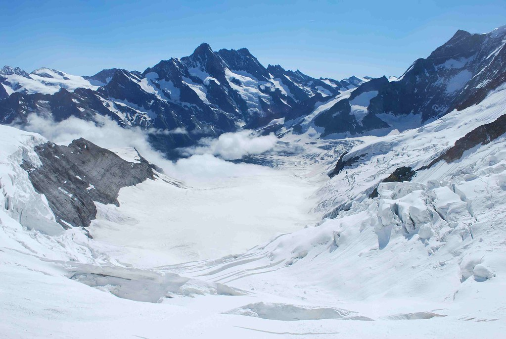
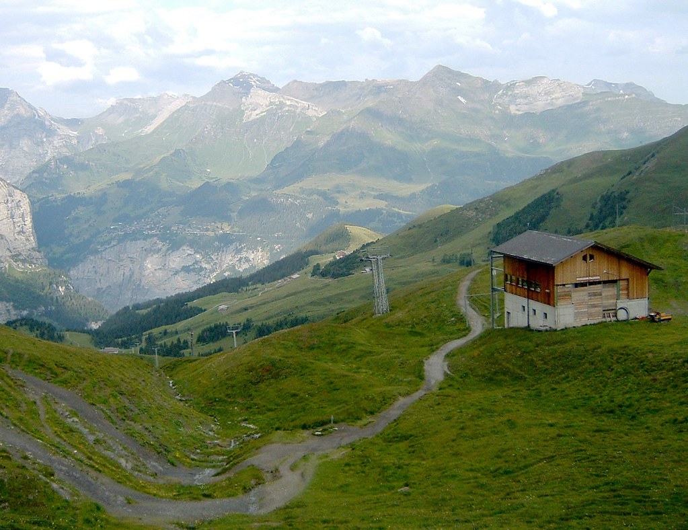
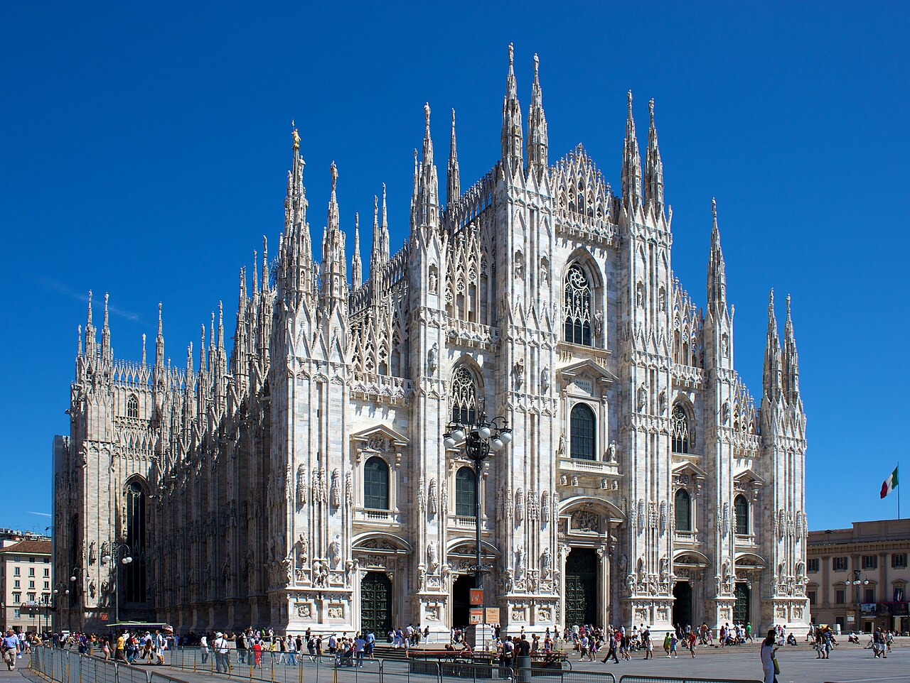
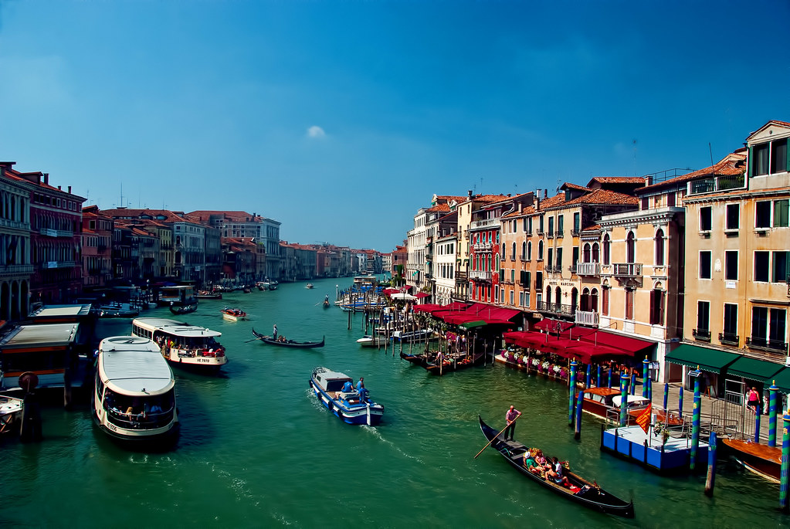
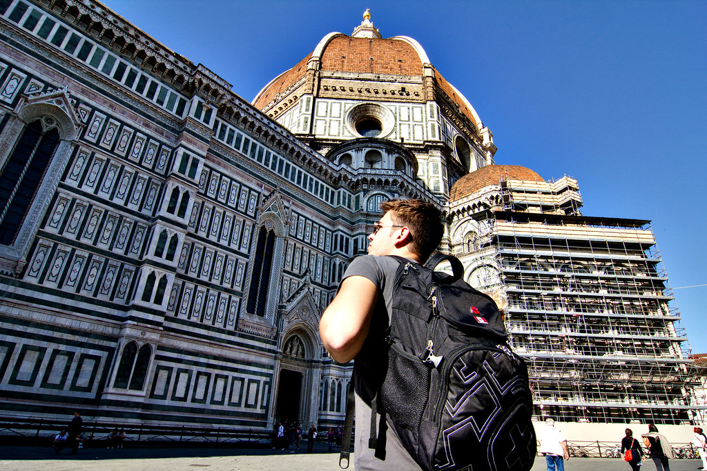
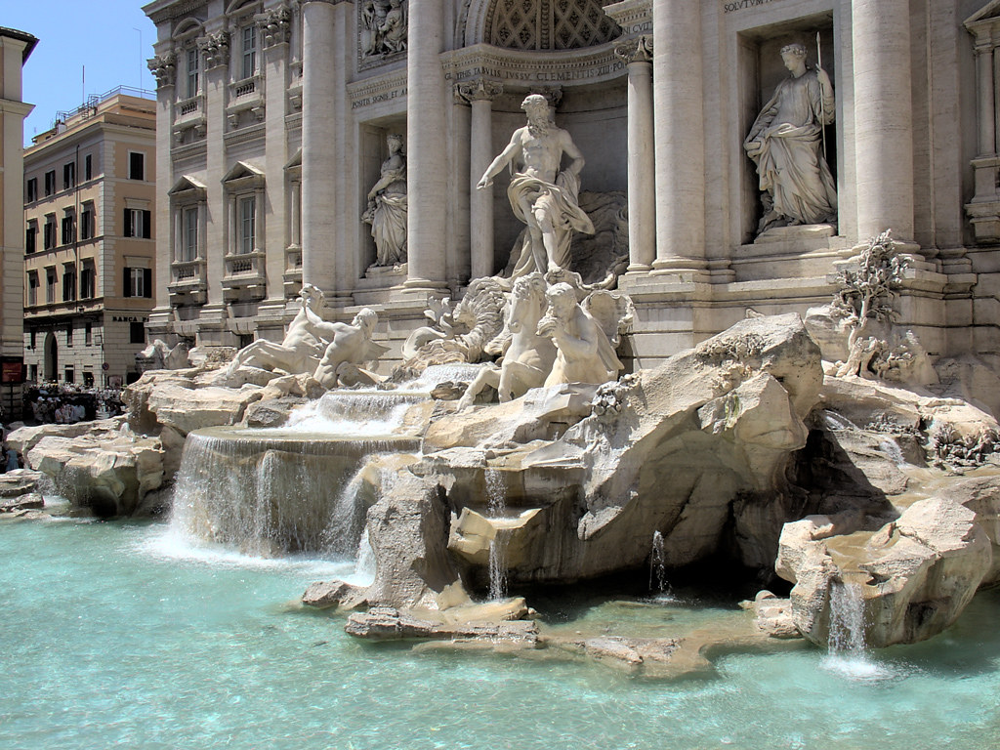
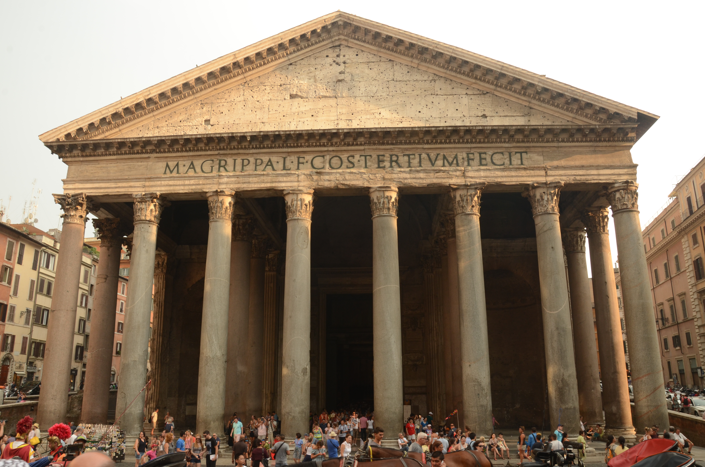

8 月／夏季實景相冊
以下係本地存低嘅夏日／晴天實景（非 AI 生成）。少女峰區：山下綠、峰頂冰川終年有雪——就係你 8 月下旬會見到嘅反差。
點解之前相「有冰雪」？
少女峰山頂同冰川終年有雪，8 月都一樣；但因特拉肯、皮拉圖斯、琉森8 月係綠草／湖／城，唔係白雪覆蓋。下面相已按呢個現實分開標。
少女峰山頂同冰川終年有雪，8 月都一樣；但因特拉肯、皮拉圖斯、琉森8 月係綠草／湖／城，唔係白雪覆蓋。下面相已按呢個現實分開標。
🇨🇭 瑞士 · 你 8 月大概會見到嘅樣子

Wikimedia · 2008-08-23

Openverse / Flickr

Openverse / Flickr

Openverse / Flickr

Openverse / Flickr

Openverse / Flickr

Openverse / Flickr

Openverse / Flickr

Openverse / Flickr
🇮🇹 意大利 · 8 月盛夏（熱、無雪）






少女峰真係要一日？
答案：唔係「一定要」成日，但多數人會用接近一日——因為車程長，唔係因為景點本身要行 8 小時。
| 方案 | 總時長（來回含山頂） | 山頂停留 | 啱邊種人 |
|---|---|---|---|
| 半日衝刺 | 約 6–7 小時 | 1–1.5 小時 | 想慳時間；天氣一般；只打卡 Sphinx／影相 |
| 大半日（推薦） | 約 8–9 小時 | 2–2.5 小時 | 第一次去；想行冰宮、慢影、食個簡餐 |
| 全日慢慢玩 | 10–12 小時 | 3 小時＋ | 想停 Lauterbrunnen／Grindelwald；唔趕下一站 |
時間花喺邊？（由因特拉肯 Ost 計）
- 上山火車（轉車）：約 2–2.5 小時（視路線：Grindelwald 或 Lauterbrunnen）
- 山頂活動：1.5–3 小時就夠（觀景台、冰宮、影相、室內）
- 落山：再約 2–2.5 小時
- 合計好易到 7–9 小時 → 行程表寫「全日」係為咗唔趕、預留等車／人多／天氣，唔係逼你喺雪地行成日
半日樣板（慳時間版）
- 07:30–08:00 因特拉肯 Ost 出發（早班較少人）
- ~10:00–10:30 到 Jungfraujoch
- 10:30–12:00 Sphinx 觀景 + 冰宮 + 影相（約 1.5h）
- 12:00–14:30 落山回 Interlaken
- 15:00 後 仲有半日：休息、Harder Kulm、湖邊、或提早執嘢翌日去米蘭
我對你行程嘅建議：
你只有約 10 日兩國，少女峰用「大半日 8–9 小時」就夠，唔使硬撐到天黑。 計劃書寫「全日」＝當日唔好再塞第二個大景點（例如同日又去采爾馬特），留 buffer 比天氣同轉車。 若天氣預告全日大雲／大風，寧願改期或縮短山頂停留，唔好為「用滿一日」硬留。
你只有約 10 日兩國，少女峰用「大半日 8–9 小時」就夠，唔使硬撐到天黑。 計劃書寫「全日」＝當日唔好再塞第二個大景點（例如同日又去采爾馬特），留 buffer 比天氣同轉車。 若天氣預告全日大雲／大風，寧願改期或縮短山頂停留，唔好為「用滿一日」硬留。
相片來源：Wikimedia Commons、Openverse/Flickr 授權圖，僅作行程預期參考。
主計劃書：index.html